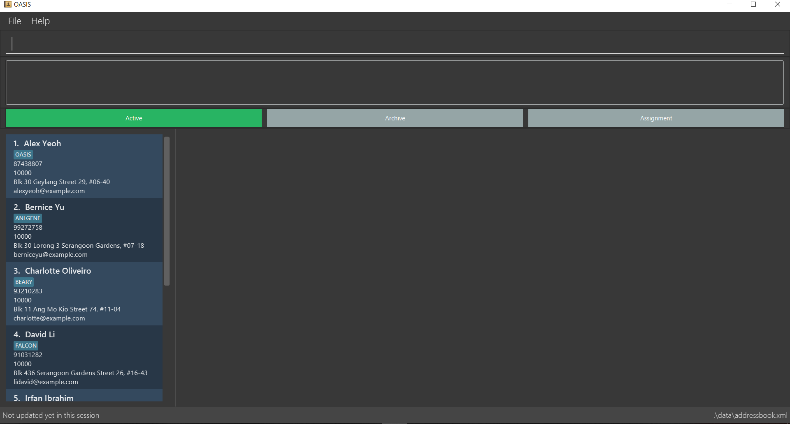
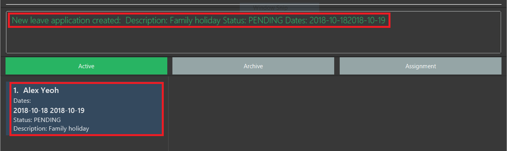
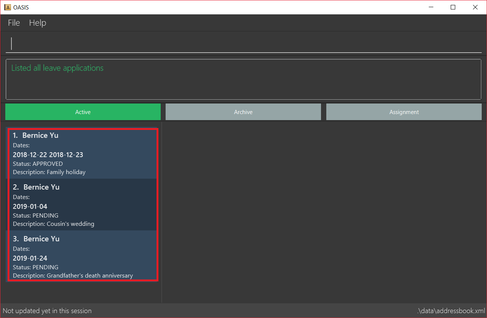
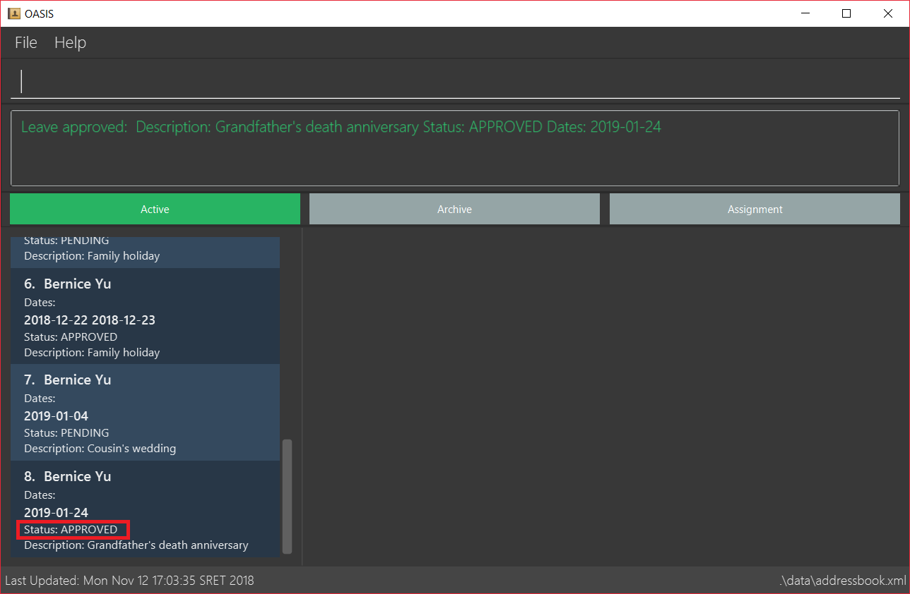
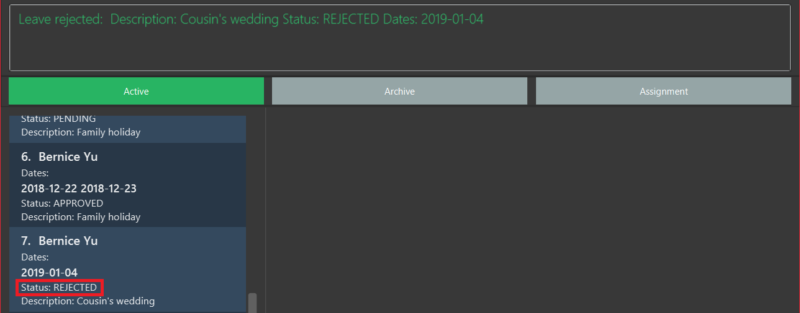

By: Nus School of Computing AY1819S1 F10-1 Team Since: Aug 2018 Licence: MIT
- 1. Introduction
- 2. Quick Start
- 3. Commands
- 3.1. Viewing help :
help - 3.2. View history :
history - 3.3. Adding an employee :
add - 3.4. Listing all active persons :
active - 3.5. View all the permissions that an employee has :
viewpermission - 3.6. Removing an employee from my department :
delete - 3.7. View deleted employee archive :
archive - 3.8. Restoring employee to active list :
restore - 3.9. List details of employee :
select - 3.10. Add an assignment :
addassignment - 3.11. List all assignments :
listassignments - 3.12. Removing an assignment :
deleteassignmnet - 3.13. Edit assignment details :
editassignment - 3.14. Apply for leave :
leaveapply - 3.15. View a list of leave applications :
leavelist - 3.16. Approve a leave application :
leaveapprove - 3.17. Reject a leave application :
leavereject - 3.18. Search employees by name :
find - 3.19. Edit details of the currently logged in user :
myself - 3.20. Edit details :
edit - 3.21. Modify permissions of an emplyee :
modifypermission - 3.22. Change password :
passwd - 3.23. Undoing previous command :
undo - 3.24. Redoing the previously undone command :
redo - 3.25. Clearing all entries :
clear - 3.26. Logout from the system:
logout - 3.27. Exiting the program :
exit
- 3.1. Viewing help :
- 4. Future Commands (Coming in v2.0)
- 5. FAQ
- 6. Command Summary
1. Introduction
OASIS is an employee management application that brings your office together. It is an all-in-one tool for office administration and communication that runs on any computer. With the use of primarily textual commands coupled with a beautiful user interface, you can get your administrative jobs done faster than with traditional point-and-click applications. Some of the main features that you can look forward to using are employee records management, authentication and permissions, assignment management, and leave management. Sounds good? Jump to Section 2, Quickstart to get started. Enjoy!
1.1. An Introduction to OASIS
The image shown below highlights the different sections of OASIS’s user interface:
1.2. Symbols used in this guide
| Denotes something that you may want to take note of. |
| Denotes something that may be helpful if you are having any difficulties. |
| Denotes a warning for something critical. |
2. Quick Start
-
Ensure you have Java version 9 or later installed in your Computer.
-
Download the latest oasis.jar here.
-
Copy the file to the folder you want to use as the home folder for your Address Book.
-
Double-click the file to start the app. The following Graphical User Interface (GUI) should appear in a few seconds:

-
To login, enter in the username
Adminand the passwordPa55w0rd. Both values are case sensitive. These values are the default username and password combinations for the admin account, and are always available. -
After you have logged in, you should be taken to the following screen:
 -
Now you can type a command in the command box and press Enter to execute it.
e.g. typing help and pressing Enter will open the help window. -
Some example commands you can try:
-
list: lists all employees. -
add -n John Doe -p 98765432 -e johnd@example.com -a 311, Clementi Ave 2, #02-25 -s 10000: adds an employee named John Doe with the email johnd@example.com, the address 311, Clementi Ave 2, #02-25, with a salary of 10,000. -
find J*: finds all employees where any of their names start with J. -
delete 1: Deletes employee at the first location on the current displayed list. -
exit: exits the app
-
-
Refer to Section 3, “Commands” for details of each command.
3. Commands
Command Format
-
Words in
UPPER_CASEare the parameters to be supplied by the user e.g. inadd -n NAME,NAME,SECTORis a parameter which can be used as `add -n John -s Sales `. -
Items in square brackets are optional e.g
-n NAME [-t TAG]can be used as-n John Doe -t friendor as-n John Doe. -
Items with
… after them can be used multiple times including zero times e.g.-t TAG…can be used as-t friend,-t friend -t familyetc. -
Parameters can be in any order e.g. if the command specifies
-n NAME -p PHONE_NUMBER,-p PHONE_NUMBER -n NAMEis also acceptable.
Command Auto Complete
OASIS has provided you with a command auto complete feature to aid you with the usage of commands. With this functionality, you no longer have to memorise any commands!
When you type commands into the command box, a drop down list of possible commands will appear, as shown in the screenshot below.
When the drop down list is shown, you can do the following:
-
Use
↑and↓to navigate through the list -
Press Enter to select the highlighted option
After selecting the command, you will see that the command will be displayed in the command box.
If you wish to see a list of all commands, simply type Space into an empty command box. You should see the list as shown in the screenshot.
3.2. View history : history
Prints all commands entered before as a history of commands.
Format: history
|
Pressing the ↑ and ↓ arrows will display the previous and next input respectively in the command box. |
3.3. Adding an employee : add
Adds an employee into the system.
Format: add -n NAME -e EMAIL -p NUMBER -s SALARY -a ADDRESS [-u USERNAME] [-t ASSIGNMENT]
-
If username is not specified, it will default to being the same as NAME.
Examples:
-
add -n Joshua -s 15000 -e josh@gmail.com -p 81234567 -a 81 Joshua’s Road Singapore 123456 -
add -n Raynard -e rnardha@gmail.com -p 91235678 -s 1000 -a somewhere on earth -u Nard
3.4. Listing all active persons : active
Shows a list of all employees in the system.
Format: active
3.5. View all the permissions that an employee has : viewpermission
Displays all the permissions that an employee has been assigned.
Format: viewpermission INDEX
Examples:
-
viewpermission 2
3.6. Removing an employee from my department : delete
Removes an employee from the current displayed list.
Format: delete INDEX
Examples:
-
delete 3
3.7. View deleted employee archive : archive
Displays the list of archive employees.
| Archived employees will remain in archive list until they are restored which will send it back to the active list or deleted from archive which will erase all selected employee data completely. |
Format: archive
3.8. Restoring employee to active list : restore
Restores an employee to active list from the archived list.
Format: restore INDEX
Examples:
-
restore 2
3.9. List details of employee : select
Lists the detailed information of an employee in the shown list on the left panel. This will also display the employee’s profile on the right. This is the same result as if the person is clicked in the GUI.
Format: select INDEX
Examples:
-
select 3
3.10. Add an assignment : addassignment
Adds an assignment into the system.
Format: addassignment -an ASSIGNMENT_NAME -au AUTHOR -de DESCRIPTION
Examples:
-
addassignment -an KRYPTONE -au Jhonny English -de Data encription application. -
addassignment -n IRobot -au Tom Smith -de Autonomous robotic vacuum cleaner which has intelligent programming.
3.11. List all assignments : listassignments
Displays a list of assignments that are in the system.
Format: listassignments
3.12. Removing an assignment : deleteassignmnet
Removes an assignment from the system.
Format: deleteassignment INDEX
Examples:
-
deleteassignment 3
3.13. Edit assignment details : editassignment
Changes assignment details (such as description).
Format: editassignment INDEX [-an ASSIGNMENT NAME] [-au AUTHOR] [-de DESCRIPTION]
3.14. Apply for leave : leaveapply
Apply for leave on specific dates.
Format: leaveapply -de DESCRIPTION -da DATE [-da DATE]…
If the DATE is of an illegal format, the command will be rejected.
|
Example: leaveapply -de Family holiday -da 2018-10-18 -da 2018-10-19
The system will display a message indicating a succesful creation of the new leave, as shown:

If you do not see your list of leave applications, run the leavelist command.
|
3.15. View a list of leave applications : leavelist
Displays a list leave applications that you have made.
Format: leavelist
A list of your leave records will be displayed in the left panel. An example is shown below:

| If you have the "VIEW_EMPLOYEE_LEAVE" permission, all other employee leave applications will be shown too. |
3.16. Approve a leave application : leaveapprove
Sets the status of a leave application to the "Approved" status.
Format: leaveapprove [INDEX]
| To use this command, you must have "APPROVE_LEAVE" permissions. |
Example: leaveaprove 8
The status of the 8th leave application displayed with leavelist is changed to APPROVED, as shown:

3.17. Reject a leave application : leavereject
Sets the status of a leave application to the "Rejected" status.
Format: leavereject [INDEX]
| To use this command, you must have "APPROVE_LEAVE" permissions. |
Example: leavereject 7
The status of the 7th leave application displayed with leavelist is changed to REJECTED, as shown:

3.18. Search employees by name : find
Search and display all employees that match the given name criteria.
Format: find NAME
Examples:
-
find jian yu: Displays everyone whose names contain "jian" or "yu", surrounded by whitespace. -
find d*Displays all employees where any of their names start with d. -
find T_mDisplays 'Tom' and 'tim', but not 'Tian'
3.19. Edit details of the currently logged in user : myself
Changes the details of the currently logged in user
Format: myself [-p PHONE] [-e EMAIL] [-a ADDRESS] [-t ASSIGNMENT]
-
At least one of the optional fields must be provided.
-
Existing values will be updated to the input values.
Examples:
-
myself -p 91234567 -e johndoe@example.com -
myself -n James
3.20. Edit details : edit
Changes the users details (such as contact information).
Format: edit INDEX [-n NAME] [-p PHONE] [-e EMAIL] [-a ADDRESS] [-s SALARY] [-t ASSIGNMENT]
-
Edits the person at the specified INDEX. The index refers to the index number shown in the displayed person list. The index must be a positive integer 1, 2, 3, …
-
At least one of the optional fields must be provided.
-
Existing values will be updated to the input values.
Examples:
-
edit 1 -p 91234567 -e johndoe@example.com -
edit 2 -n James
3.21. Modify permissions of an emplyee : modifypermission
This command allows you to modify the permissions of an employee.
Format : modifypermission INDEX [-a PERMISSION_TO_ADD]… [-r PERMISSION_TO_REMOVE]…
-
Modifies the permission of the person at the specified INDEX. The index refers to the index number shown in the displayed person list. The index must be a positive integer 1, 2, 3, …
The following is the list of Permissions available.
| Permission | What it does |
|---|---|
ADD_EMPLOYEE |
Allows the user to add employee |
DELETE_EMPLOYEE |
Allows the user to delete employee |
RESTORE_EMPLOYEE |
Allows user to restore archived employees |
EDIT_EMPLOYEE |
Allows the user to edit information of an employee |
VIEW_EMPLOYEE_LEAVE |
Allows user to view other employee’s applications for leave |
APPROVE_LEAVE |
Allows user to approve and reject leave application |
ADD_ASSIGNMENT |
Allows user to add assignments into OASIS |
DELETE_ASSIGNMENT |
Allows user to delete assignments |
EDIT_ASSIGNMENT |
Allows user to edit assignments |
ASSIGN_PERMISSION |
Allows user to assign permission to employees |
Examples:
-
modifypermission 1 -a ADD_EMPLOYEE
-
modifypermission 2 -a DELETE_EMPLOYEE -r ADD_EMPLOYEE
3.22. Change password : passwd
Changes user password.
Format: passwd
-
The password must contain at least 1 captial letter, one lowercase letter and one digit. It must also be at least 8 characters long.
| Passwords should not to be supplied in the command line (makes it vulnerable to viewing it through history.) |
3.23. Undoing previous command : undo
Restores the address book to the state before the previous undoable command was executed.
Format: undo
|
Undoable commands: those commands that modify the address book’s content ( |
Examples:
-
delete 1
list
undo(reverses thedelete 1command) -
select 1
list
undo
Theundocommand fails as there are no undoable commands executed previously. -
delete 1
clear
undo(reverses theclearcommand)
undo(reverses thedelete 1command)
3.24. Redoing the previously undone command : redo
Reverses the most recent undo command.
Format: redo
Examples:
-
delete 1
undo(reverses thedelete 1command)
redo(reapplies thedelete 1command) -
delete 1
redo
Theredocommand fails as there are noundocommands executed previously. -
delete 1
clear
undo(reverses theclearcommand)
undo(reverses thedelete 1command)
redo(reapplies thedelete 1command)
redo(reapplies theclearcommand)
3.26. Logout from the system: logout
Logouts from the system, returning to the login screen. Once this command is ran, the history log of the commands and undo or redo history will be cleared.
Format: logout
3.27. Exiting the program : exit
Exits the program, automatically saving data and logging you out.
Format: exit
4. Future Commands (Coming in v2.0)
4.1. Sort employee display list : sort
Lists all employees, using a given criteria.
Format: sort -CRITERIA
There are many different criteria like name, department, etc.
-
To sort by name, replace CRITERIA with n
-
To sort by department, replace CRITERIA with d
Examples:
-
sort -d -
sort -n
4.2. Filter employees by criteria : filter
Displays employees with details that match certain criteria specified.
Format: filter -CRITERIA FILTER_CRITERIA [-CRITERIA FILTER_CRITERIA]
Examples:
-
filter -n Tan -
filter -n Albert -d Marketing
4.3. List effectiveness of sector by profit : sector
Lists all the sectors, sorted by more profitable sector first.
Format: sector
4.4. View leave summary : leavesummary
Views the summary of off days current employees have taken for the month.
Format: leavesummary
5. FAQ
Q: What if I lose my password?
A: Please contact an IT admin to help reset your password.
Q: Is it possible for me to change my username?
A: No, the username assigned to you is fixed.
6. Command Summary
6.1. Commands that do not require permissions
| Command | Format | Example |
|---|---|---|
Apply for leave |
leaveapply -de DESCRIPTION -da DATE [-da DATE]… |
leaveapply -de Family holiday -da 2018-11-01 -da 2018-11-02 |
Change password |
passwd |
passwd |
Edit details of the currently logged in user |
myself |
myself -p 99900999 -e a@b.com -a Somewhere over the rainbow |
Exit |
exit |
exit |
Filter employees by criteria |
filter -CRITERIA FILTER_CRITERIA [-CRITERIA FILTER_CRITERIA] |
filter -n Jeremy Choo -d Development |
Help |
help |
help |
History |
history |
history |
List all assignments |
listassignments |
listassignments |
List all employees |
list |
list |
Logout from the system |
logout |
logout |
Redo commands |
Redo |
Redo |
Search employees by name |
find NAME |
find Joshua |
Select an employee |
select INDEX |
select 1 |
Sort employee display list |
sort -CRITERIA |
sort -df |
Undo commands |
undo |
undo |
View archived employees |
archive |
archive |
View your own leave application list |
leavelist |
leavelist |
6.2. Commands that require permission
| Command | Required Permission | Format | Example |
|---|---|---|---|
Add an assignment |
ADD_ASSIGNMENT |
addassignment -an ASSIGNMENT_NAME -au AUTHOR -d DESCRIPTION |
addassignment -an KRYPTONE -au Jhonny English -d Data encription application. |
Add employee |
ADD_EMPLOYEE |
add -n NAME -e EMAIL -p NUMBER -s SALARY [-t ASSIGNMENT] |
add -n Joshua -s 15000 -e josh@gmail.com -n 81234567 -a 81 Joshua’s Road Singapore 123456 |
Approve a leave application |
APPROVE_LEAVE |
leaveapprove INDEX |
leaveapprove 2 |
Clear |
Admin |
clear |
clear |
Delete an assignment |
DELETE_ASSIGNMENT |
deleteassignment INDEX |
deleteassignment 1 |
Delete employee |
DELETE_EMPLOYEE |
delete INDEX |
delete 1 |
Edit an assignment |
EDIT_ASSIGNMENT |
editassignment INDEX [-an ASSIGNMENT NAME] [-au AUTHOR] [-de DESCRIPTION] |
editassignment 1 -an OASIS v2.0 -au MARY GOSLOW |
Edit employee |
EDIT_EMPLOYEE |
edit INDEX [-n NAME] [-p PHONE] [-e EMAIL] [-a ADDRESS] [-s SALARY] [-t ASSIGNMENT] |
edit 1 -p 91234567 -e johndoe@example.com |
Modify Permission |
ASSIGN_PERMISSION |
modifypermission INDEX [-a PERMISSION_TO_ADD]… [-r PERMISSION_TO_REMOVE]… |
modifypermission 2 -a DELETE_EMPLOYEE -r ADD_EMPLOYEE |
Reject a leave application |
APPROVE_LEAVE |
leavereject INDEX |
leavereject 1 |
Restore employee |
RESTORE_EMPLOYEE |
restore INDEX |
restore 2 |
View all Permissions of employee |
ASSIGN_PERMISSION |
viewpermission INDEX |
viewpermission 1 |
View leave application list of all employees |
VIEW_EMPLOYEE_LEAVE |
leavelist |
leavelist |
6.3. Keyboard Shortcuts
| Command | Key |
|---|---|
Add employee |
CTRL + A |
Exit |
CTRL + Q |
Find employee |
CTRL + F |
List employees |
CTRL + L |
Select |
CTRL + S |